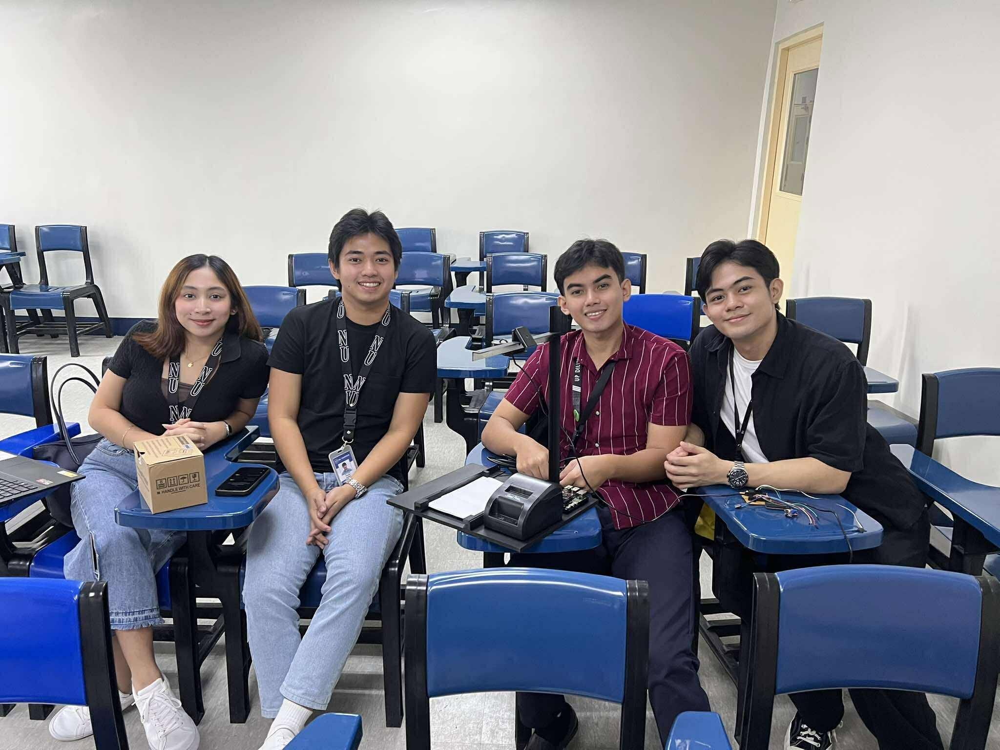

Elective Course Project · 4-Member Team
CHEXAM: An Offline Automated Exam Checker Device
Overview
Chexam is an offline exam-checking device built for schools and institutions with limited or no internet access. It automates grading for handwritten multiple choice, true/false, identification, and short essay questions using a Raspberry Pi 5, OCR, and a custom-trained YOLO model (Ultralytics 11N) to recognize handwritten letters (A–E, T, F). ArUco markers on the answer sheets allow the camera to reliably detect and align the paper regardless of angle or lighting. After scanning the answer key and a student’s paper, the device compares them and prints either a detailed breakdown or a summary-only score on a built-in thermal printer, selected with a toggle.
Quantifiable Results
- Multiple Choice detection accuracy: 96.27% mean positive detection rate across 25 test rounds
- True/False detection accuracy: 100% mean positive detection rate, 0% error
- Identification (word-level) detection accuracy: 92.91% mean positive detection rate
- Essay handwriting detection accuracy: 98.95% mean positive detection rate
- Built on a ~₱7,900 hardware budget (Raspberry Pi 5, webcam, thermal printer, custom feeder, and supporting electronics)
- Essay checking limited to 5 sentences per response, using uppercase handwriting for OCR reliability
My Contribution
I programmed the core software for image capture, OCR/YOLO-based handwriting recognition, answer-key comparison, and scoring. I also trained and fine-tuned the YOLO model using custom-labeled handwriting datasets collected for the project.